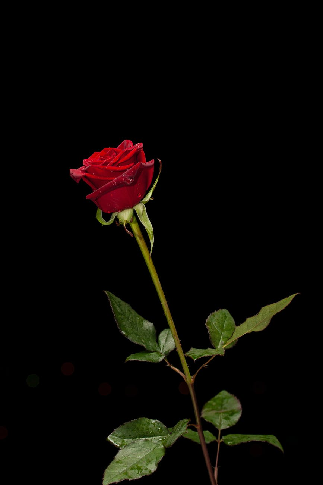

Магазин цветов
Цветы
Розы
Цена: ~ руб.
Я думаю, что любой человек, хотя бы раз в жизни покупал розу. Не важно — был ли это огромный букет или одна единственная маленькая розочка, был ли это робкий знак внимания или шикарный подарок. Важно то, что в любом случае, все эти люди старались подобрать самые свежие, самые красивые и самые лучшие розы.В нашем магазине всегда самые свежие и красивые розы!
Тюльпаны
Цена: ~ руб.
Рано или поздно, поздно или рано перед каждым из нас встает вопрос о покупке цветов, особенно если близится какой-нибудь масштабный праздник. Тюльпаны, как правило, принято дарить на 8 Марта, эти цветы давно стали символами международного женского дня и лидерами продаж в эти дни. 80% покупок от общего количества проданных за первый весенний месяц цветов приходится на тюльпаны. Лучшие тюльпаны вынайдёте в нашем магазине! У нас большой выбор цветов и сортов этих нежных цветов.
Нарциссы
Цена: ~ руб.
Удивительно нежный и романтичный цветок нарцисс в последнее время был незаслуженно забыт флористами. Большинство магазинов считают его не слишком прибыльным и вообще не используют для продажи. Нарциссы отлично освежают и дополняют любую цветочную композицию. Наиболее изумительным вариантом букета с нарциссами является сочетание с ними хвойных веток. Купите нарцисс у нас и получите скидку на следующую покупку!
Лилии
Цена: ~ руб.
Одни из самых популярных цветов для букетов, которые едва ли уступают розам в этом плане. Нежный изящный внешний вид позволяет находиться лилии во многих композициях, которые подходят для самых различных торжеств. Чтобы букет не показался скучным настоятельно рекомендуется сделать его только из лилий. Основным нюансом для флориста в этом случае является правильный подбор ленты, которая будет дополнять композицию. Если же такой вариант вас не устраивает, то можете попробовать смешать лилии с пионами, ирисами или ромашками. Мелкие белые цветы для букетов гармонично сочетаются с крупными лилиями. А вот соседства с васильками лучше всего избегать.
Хризантемы
Цена: ~ руб.
Благородный цветок, который нередко украшает букеты, предназначающиеся для взрослых женщин. Этот цветок пользуется большой популярностью как у начинающих флористов, так и у профессионалов. Лучше всего с хризантемами сочетаются, розы и герберы. Также с цветами неплохо смотрятся красные веточки рябины или других ягод. Если вы решили составить круглый букет, то настоятельно рекомендуется укладывать цветы под углом, а не параллельно.